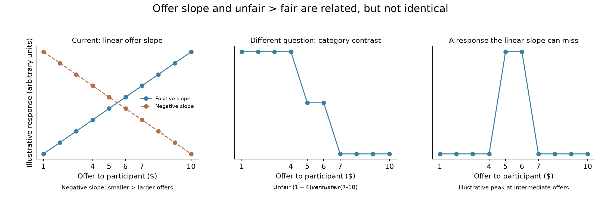
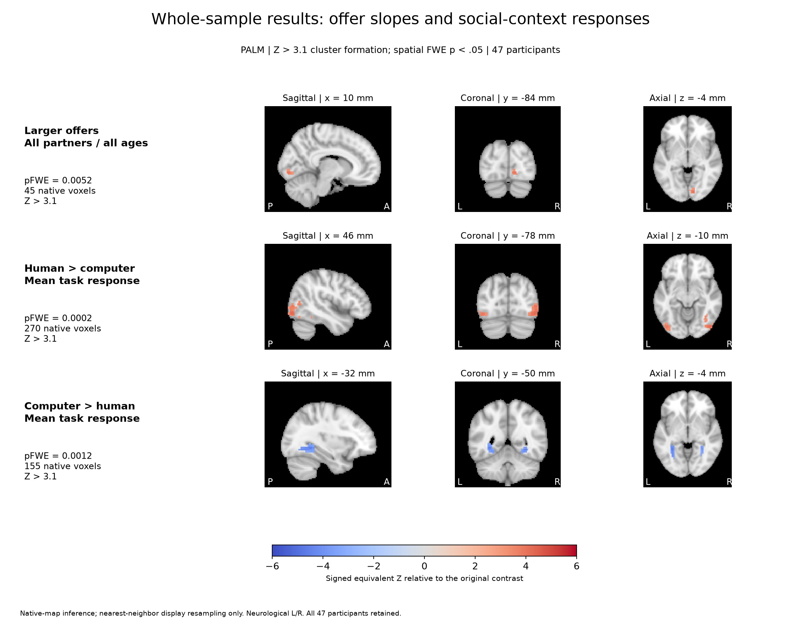
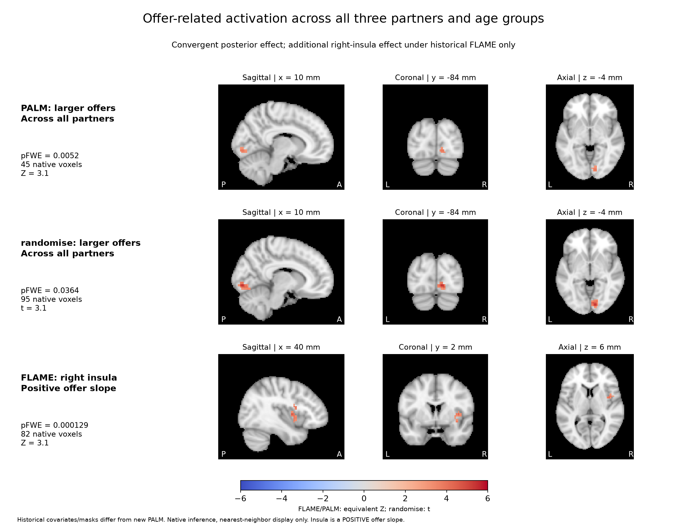
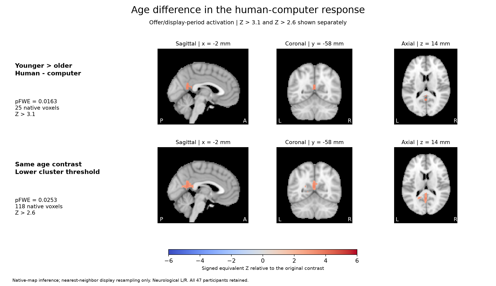
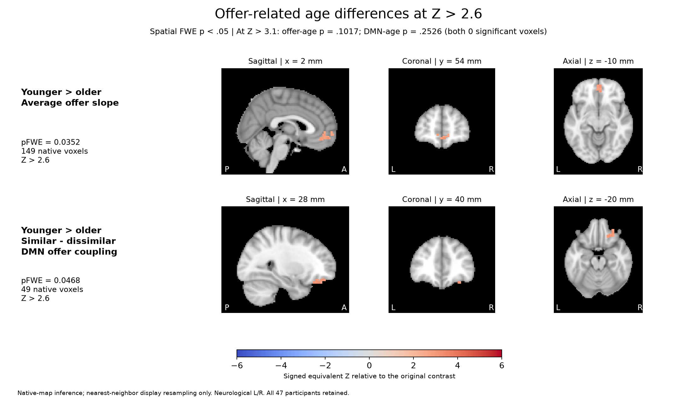
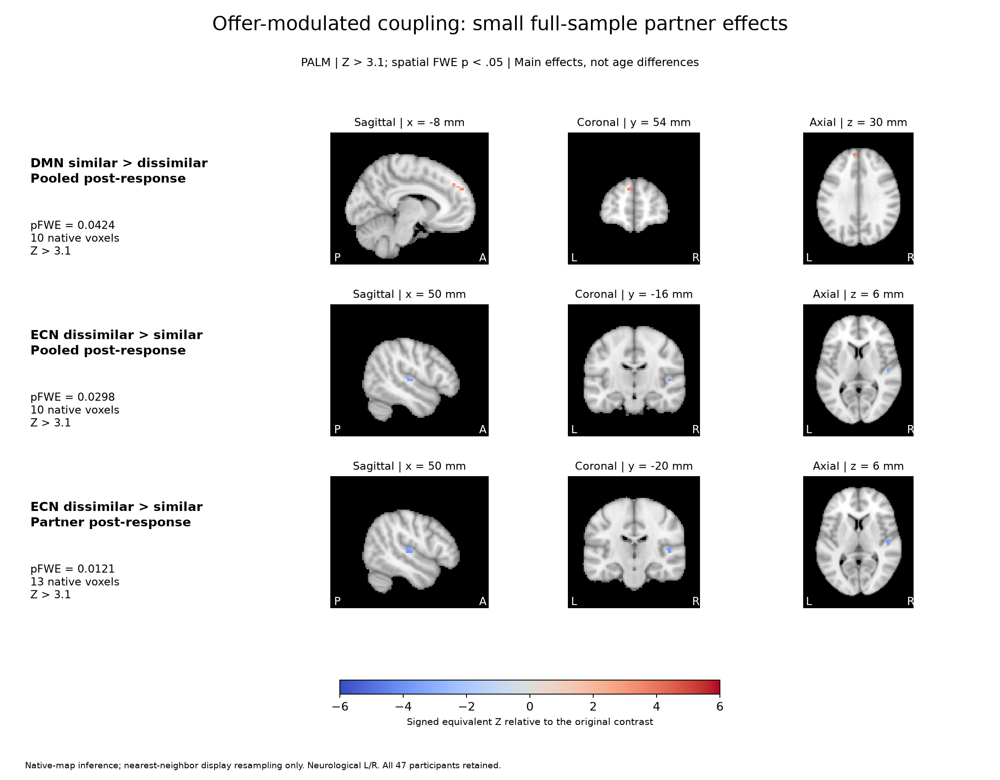
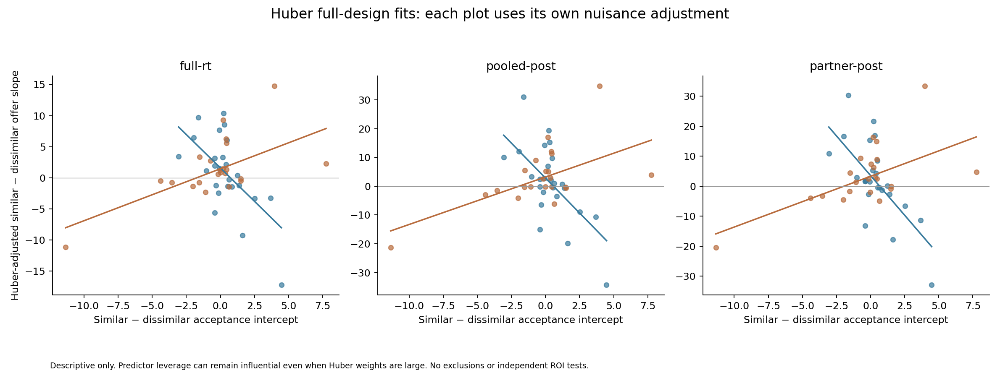
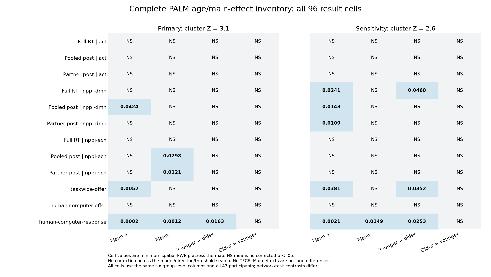

SRNDNA Ultimatum: updated scientific results
SRNDNA Ultimatum | Updated results report
Scientific review for the author team | 2 November 2026. N = 47 (25 younger, 22 older). This report consolidates the corrected results and supersedes the earlier figure packets. It does not constitute a revised manuscript or a completed response to reviewers.
Behavior: acceptance increases strongly with offer amount. The primary mixed model does not detect age moderation of the offer slope or its similar-dissimilar difference. Partner ratings distinguish humans from the computer; they do not establish an age-specific behavioral mechanism.
Imaging: the full-sample positive offer slope converges in posterior cortex. An age difference in the unmodulated human-computer response survives PALM at both cluster thresholds. Offer-related age findings are weaker: task-wide activation and full-display DMN PPI survive at Z > 2.6, but not Z > 3.1. No original ECN age claim is restored.
Scope: whole-brain cluster inference at Z > 2.6 and Z > 3.1 is shown side by side. No TFCE result, vmPFC ROI test, or new targeted ROI inference is used to support the current narrative. Selected-cluster plots are descriptive decompositions of effects, not additional independent tests.
Computational behavior: Gu-style hierarchical models and bias extensions were fitted. Recovery and diagnostic gates remain uncleared, so individual model parameters are not released as imaging covariates or presented as established age mechanisms.
Completed current batch: 24/24 standardized PALM jobs, 96 signed summaries, 10,000 shuffles per test, all 47 participants retained. Earlier broad PALM and activation-coverage work have separate uncollected or unfinished status; they are not silently treated as complete.
What the current imaging model tests
Original and corrected full-display model: three partner-specific display regressors (computer, similar, dissimilar), three matching offer-amount modulators, missed trials, a response-related constant term and an RT-height term, plus confounds. The correction restores dedicated RT coverage for block-first responses; it does not replace the original task with an accept/reject model. The corrected RT EVs are zero-duration events at offer onset, with heights 1 and raw RT. In nPPI, network main effects and task-by-network interactions are added; the offer-PPI contrast concerns those interactions, not the corresponding activation coefficient.
Offer slope: the modulator asks whether activity changes approximately linearly with the amount offered. Positive means more activity for larger offers; negative means more activity for smaller offers. Amount also changes the participant's own payoff, so the task cannot isolate fairness from monetary value. PPI tests analogous offer-dependent network coupling, not activation itself.
Unmodulated partner response: the human-computer contrast compares mean offer/display responses while retaining the offer modulators. The templates orthogonalize each offer modulator to its matching constant partner EV. This is a context-response contrast; it is not a purified fairness effect or proof of mentalizing.
Were we doing unfair > fair as well? No separate categorical unfair-minus-fair model appears in the current analysis. The negative offer-slope contrast addresses a related linear prediction. Under a linear response, the two should be directionally consistent; they are not identical tests when responses are nonlinear. No categorical refit was launched for this report.
| Contrast | Quantity tested |
|---|
| COPE7: similar - dissimilar offer slopes | Partner difference in linear offer sensitivity (or its PPI analogue) |
| COPE8: -2 computer_p + similar_p + dissimilar_p | Human-computer offer-slope difference; twice the human-average contrast |
| COPE10: -2 computer + similar + dissimilar | Unmodulated human-computer response; twice the human-average contrast |
| COPE11: (computer_p + similar_p + dissimilar_p)/3 | Average offer slope across all three partners |
Model clarification | What we have and have not tested

Schematic curves, not participant data. The existing offer modulator tests a linear response to amount. Its negative contrast tests a linear increase for smaller offers. A categorical unfair-minus-fair test would require separately modeled categories (or an appropriate richer basis); it cannot be obtained by relabeling the negative linear slope. The third curve illustrates one possible nonlinear response, not evidence that such a response exists in this dataset. No categorical refit is included in this report.
Corrections, timing specifications and group inference
Data identity: sub-144 Ultimatum events were repaired from retained source records. Sub-143 had substantive RT information despite lacking redundant event_RT rows; it did not require the same identity repair. The dedicated historical RT EVs omitted block-first responses. The all-responded correction propagated through activation and DMN/ECN L1/L2 analyses.
Group model: all-ones mean, centered categorical age, sex, verified tSNR, verified mean framewise displacement, and corrected mean RT. The new direct age/main PALM batch uses six full-rank columns consistently. Its mean is sample-weighted across 25 younger and 22 older participants, rather than an equal-weight mean of the two age groups.
RT in timing alternatives: both the constant partner term and its offer modulator use onset-to-button-press duration in the decision-epoch models. These replace the dedicated RT-height terms with one or three post-response nuisance EVs. Imaging RT is measured from offer onset; the auxiliary behavioral RT analysis subtracts the fixed one-second delay before response options appear.
Coverage: the strict mask contains 59,297 native voxels with valid estimates and positive VARCOPE support across all 94 runs and 47 participant-level estimates. No participants were excluded. FILM threshold --thr=1000 was verified; low-signal zero estimates inside broader masks were not interpreted as reliable observations. Original signed continuous network maps were retained.
Inference: FLAME is the submitted mixed-effects estimator and uses within-participant variance information. randomise provides an unweighted permutation comparison. Current PALM uses age variance groups, symmetric-error sign flips and Freedman-Lane nuisance handling; it does not reproduce FLAME VARCOPE weighting. Unequal-variance handling need not make every test more conservative.
Thresholds: PALM uses Z > 3.1 and Z > 2.6 cluster formation with spatial FWE p < .05. randomise uses t > 3.1 and t > 2.6, which are not identical Z thresholds. Report both prespecified audit thresholds rather than choosing whichever is significant. Spatial FWE applies within each signed test, not jointly across all models, directions and thresholds.
| Timing label | Task epochs and RT treatment | Interpretation |
|---|
| Full RT | Full ~3.5-second display + corrected response/RT-height EVs | Closest to the submitted model; includes visual and post-response time |
| Pooled post | Offer onset to response; one pooled post-response EV | Separates residual display time with a shared nuisance response |
| Partner post | Offer onset to response; three partner-specific post-response EVs | More flexible nuisance model; high decision/post-response correlations |
Corrected behavior | Choices, response time and misses
Primary social-choice GLMM: 47 participants, 4,438 responded human-partner trials. Participant-specific intercepts and offer slopes; converged, nonsingular, with agreement across optimizers. The strong offer coefficient is conditional on the reference age/partner; it is not a marginal all-condition average. Null interactions do not establish equivalence.
Response-selection RT: time measured after the response options appeared (one second after offer onset). Older-minus-younger coefficient = -0.1187 seconds, p = .0382; partner p = .8367, age x partner p = .5872. These are retained auxiliary tests, not a mechanism explaining the imaging age contrast.
Misses: younger mean 1.48 (37 total), older mean 3.50 (77 total); Welch p = .0959. The similar-minus-dissimilar behavioral offer-sensitivity score has younger-minus-older difference -0.0979, p = .5837. The simpler random-intercept choice model also does not detect the three-way interaction (p = .4547).
| Primary term | Estimate | SE | p |
|---|
| Intercept (reference cell) | 3.6819 | 1.3400 | 0.0060 |
| Offer slope (younger / dissimilar reference) | 1.8013 | 0.2373 | 3.2e-14 |
| Older - younger at centered offer / dissimilar | 0.3047 | 1.9326 | 0.8747 |
| Similar - dissimilar (younger) | 0.1324 | 0.1784 | 0.4580 |
| Age difference in offer slope (dissimilar) | -0.1654 | 0.3301 | 0.6162 |
| Partner difference in offer slope (younger) | -0.0939 | 0.0667 | 0.1592 |
| Age x partner at centered offer | -0.4274 | 0.2706 | 0.1143 |
| Age x offer x partner | 0.1136 | 0.0947 | 0.2303 |
Draft Figure 1 | Corrected social-choice behavior

Acceptance increased with offer size. The corrected random-intercept/random-offer-slope model converged without singularity. No reliable age or age-by-partner moderation was detected; this does not establish equivalence. Points show observed participant means and SEM, rather than a conditional logistic curve at zero random effects. Similar/dissimilar refer to proposer age relative to the participant. Offer amount also changes the participant's monetary payoff.
Draft Figure 2 | Partner ratings

Humans were rated fairer and more likeable than the computer before and after the task. The corresponding similar-minus-dissimilar comparisons are nonsignificant after BH adjustment. These are ratings in a subsample, not evidence that partner ratings mediate an age effect.
Ratings | Social context, fairness sensitivity and limits
Sample and provenance: 42 pre-task and 42 post-task ratings; 41 paired. The final complete attempt is the version of record. Sub-143 has no ratings source; sub-144 ratings were checked for participant provenance and are not duplicates of another participant's ratings.
Choice-slope associations: exploratory similar-minus-dissimilar pre-task likeability correlates negatively with the corresponding choice-slope difference (Spearman rho = -.4055, p = .00772, BH q = .03662). Post-task anger correlates positively (rho = .3974, p = .00916, q = .03662). Corresponding Pearson tests have q = .09767. Fairness-rating associations do not survive correction; age interactions are not established.
Direct trial-level moderation: pre-task fairness p = .8682 and likeability p = .8342 (42 participants, 3,969 trials); their age interactions p = .2032/.6220. These findings provide social-context description, not evidence that ratings explain an age-related fairness mechanism.
| Time | Rating | Contrast | n | Mean difference | BH q |
|---|
| post | fairness | human mean minus computer | 42 | 0.821 | 0.0061 |
| post | fairness | similar minus dissimilar | 42 | 0.071 | 0.9293 |
| post | likeability | human mean minus computer | 42 | 1.214 | 0.0028 |
| post | likeability | similar minus dissimilar | 42 | -0.238 | 0.3648 |
| pre | fairness | human mean minus computer | 42 | 1.060 | 0.0053 |
| pre | fairness | similar minus dissimilar | 42 | 0.024 | 0.9293 |
| pre | likeability | human mean minus computer | 42 | 1.726 | 2.7e-05 |
| pre | likeability | similar minus dissimilar | 42 | -0.071 | 0.8047 |
Whole-sample results: offer slopes and social-context responses

The first row is parametric; the other rows are unmodulated partner-response contrasts from models that also contain offer modulators. They test different quantities. Positive offer-related activation is posterior; it is not a convergent anterior-insula/dACC unfairness finding. All displayed PALM voxels lie within earlier significant FLAME and randomise maps, whose covariates/masks are not fully matched.
Full-sample activation | Both directions and thresholds
Foundational result: larger offers have a corrected positive activation effect across all partners and ages. Current permutation convergence is posterior (lingual/occipital regions), rather than an established anterior-insula or dACC unfairness result.
Social context: human-computer response contrasts identify different sets of regions in the positive and negative directions. Human-computer offer-slope differences are nonsignificant in the standardized PALM batch. Mean task responses must not be described as offer sensitivity.
Insula: earlier corrected-data FLAME detects a positive right-insular cluster; its anatomical label is supported by the atlas audit. This finding is not confirmed by the permutation maps at either threshold. No corrected negative offer-slope or dACC cluster is established. A null whole-brain result is not proof of no response.
| Effect | Z > 3.1: p / voxels | Z > 2.6: p / voxels |
|---|
| Positive average offer slope | 0.0052 / 45 | 0.0381 / 96 |
| Negative average offer slope | 0.7646 / 0 | 0.2763 / 0 |
| Human > computer offer slope | 0.3453 / 0 | 0.1376 / 0 |
| Computer > human offer slope | 0.6275 / 0 | 0.6326 / 0 |
| Human > computer response | 0.0002 / 270 | 0.0021 / 617 |
| Computer > human response | 0.0012 / 155 | 0.0149 / 266 |
Across-partner offer activation | Anatomical comparison

Corrected positive offer-related activation, averaged across all three partners. The retained FLAME right-insular cluster contains 82 voxels, p = .000129, Zmax = 4.49, peak [40.3, 1.29, 5.22] mm. It reflects larger offers, not greater activation for unfair offers. Neither permutation analysis confirms that insular cluster at either displayed cluster threshold. No corrected negative offer-slope cluster is established. This is whole-brain inference; no new ROI analysis is included.
Age difference in the human-computer response

Posterior midline human-minus-computer response difference: PALM p = .0163, 25 voxels at Z > 3.1; p = .0253, 118 voxels at Z > 2.6. This is an age-by-partner-context effect, not an age difference in the offer slope. It includes the modeled display period and does not isolate a pure decision operation or mentalizing. Participant bars for this exact 25-voxel map have not been extracted; previous bars from a larger selected region are not relabeled here.
Offer-related age differences at Z > 2.6

Task-wide activation: p = .0352, 149 voxels. Full-display DMN PPI: p = .0468, 49 voxels. Both are corrected whole-brain findings at the lower cluster-forming threshold, with the higher-threshold results disclosed. They remain threshold-sensitive evidence, not findings rescued by choosing the threshold after inspecting results. The activation effect measures an average offer slope; the PPI effect measures a between-partner difference in offer-dependent network coupling.
Sensitivity Figure | DMN three-partner bars

The age-gap direction is present before group motion adjustment, but its magnitude increases substantially after adjustment. The apparent crossover corresponds to positive offer-related coupling for younger proposers and negative coupling for older proposers in both participant groups. The computer condition supplies context and is not part of the similar-minus-dissimilar contrast. No new ROI significance test is performed.
Age effects | What holds, what changes with the model
Direct age evidence: the human-computer mean response is the only direct age contrast in the current standardized PALM batch that survives Z > 3.1. It concerns posterior midline activation during the offer/display period, not a network PPI or an offer slope.
Offer-related age evidence: full-display DMN younger > older survives Z > 2.6 (49 voxels) but not Z > 3.1. The task-wide offer-slope age contrast has the same threshold dependence. Human-computer offer-slope age tests and all older > younger tests are nonsignificant at both thresholds. Network timing alternatives do not establish a Z > 3.1 offer-related age effect.
DMN decomposition: within the selected 49-voxel region, the similar-dissimilar age gap is 20.1 without group covariates, 25.2 with sex/tSNR/RT, and 36.9 after also including group FD. Direction is present before group motion adjustment; magnitude increases with adjustment. This is a descriptive sensitivity analysis, not three independent whole-brain tests.
Partner-age interpretation: similar and dissimilar reverse proposer age across participant groups. The observed descriptive crossover aligns with positive offer coupling for younger proposers and negative coupling for older proposers in both groups. It should not be presented as simple own-age favoritism.
Original claims: the original DMN-ACC and ECN fairness-sensitivity narrative cannot be carried forward with its original numbers. The corrected evidence must replace it; within-age significance alone does not establish an age interaction.
Offer-modulated coupling: small full-sample partner effects

DMN: p = .0424, 10 voxels. ECN: p = .0298, 10 voxels (pooled post); p = .0121, 13 voxels (partner post). The ECN regions overlap in 8 voxels. These effects do not survive Z > 3.1 in the full-display model; they remain exploratory and timing dependent. Precise tissue localization and influence checks are required before substantive regional interpretation.
FLAME, randomise and PALM | Side-by-side evidence
Cells show minimum spatially corrected p / total significant voxels. FLAME without a surviving cluster has no cluster p to report. These are earlier corrected FLAME/randomise models versus the newest standardized PALM models; masks/covariates differ in places. The table therefore shows current evidence, not a controlled comparison of statistical software.
Convergence: the positive offer mean, both human/computer response means, and the human-computer age contrast have overlapping significant regions across all three approaches. All 45 / 270 / 155 / 25 significant current PALM voxels, respectively, lie within the earlier FLAME and randomise maps. This is method robustness on the same data, not independent replication.
Discrepancies: task-wide offer-age and DMN effects depend on method, mask, timing and/or threshold. No method should be selected because it yields a desired finding. Unequal-variance PALM is valuable given age-related variance concerns; it does not turn a nonsignificant fairness result into a confirmed absence.
| Effect / direction | FLAME Z > 3.1 | randomise t > 3.1 | PALM Z > 3.1 | PALM Z > 2.6 |
|---|
| Mean positive offer slope | 2.6e-06 / 348 | 0.0364 / 95 | 0.0052 / 45 | 0.0381 / 96 |
| Mean human > computer | 1.7e-15 / 756 | 0.0016 / 633 | 0.0002 / 270 | 0.0021 / 617 |
| Mean computer > human | 2e-08 / 282 | 0.0150 / 262 | 0.0012 / 155 | 0.0149 / 266 |
| Age: human-computer response | 8.2e-06 / 202 | 0.0280 / 102 | 0.0163 / 25 | 0.0253 / 118 |
| Age: average offer slope | 0.0015 / 125 | 0.0463 / 77 | 0.1017 / 0 | 0.0352 / 149 |
| Age: human-computer offer slope | No clusters / 0 | 0.5666 / 0 | 0.3320 / 0 | 0.6236 / 0 |
| Age: DMN full display | No clusters / 0 | 0.0484 / 50 | 0.2526 / 0 | 0.0468 / 49 |
| Age: DMN pooled post | No clusters / 0 | 0.1308 / 0 | 0.0894 / 0 | 0.1691 / 0 |
| Age: DMN partner post | 0.00072 / 92 | 0.1089 / 0 | 0.1409 / 0 | 0.0962 / 0 |
Decision-period social context | Literature and claim boundaries
Closest analytic precedent: Crockett et al. (2013, Journal of Neuroscience) modeled human/computer offer onsets plus amount and fairness modulators, pooling choices in their primary model. They also tested the human-computer response contrast. They could not separately estimate accepted and rejected computer offers because many participants never rejected them. Full paper.
Aging precedent: Harle and Sanfey (2012, Neuropsychologia) modeled decision epochs by partner and offer amount, pooling acceptance/rejection. Amount was categorical, not omitted. Their behavioral age difference was concentrated at a moderately unfair offer, illustrating why a categorical and a linear question can differ. Full paper.
Broader rationale: Rilling et al. (2004, NeuroImage) reported human/computer differences during economic interaction. This supports studying partner context as a meaningful question, but does not establish that our observed posterior cluster implements mentalizing. Article.
Interpretation limit: Abu-Akel et al. (2020) dissociated perceived intentionality from human/computer identity. Our contrast does not make that dissociation and includes different partner imagery. Use social-context response as the descriptive construct, with mentalizing as a possible interpretation rather than a demonstrated mechanism. Article.
Potential result wording: Younger adults showed a larger human-versus-computer offer-period response difference in posterior midline cortex. This difference survived whole-brain cluster correction in the standardized unequal-variance PALM analysis (Z > 3.1; p = .0163). The contrast measures partner-context responses across offers and should be distinguished from age differences in linear offer sensitivity.
Brain-behavior results | Important distinction between two predictors
Choice sensitivity to fairness: the participant-specific offer slope of acceptance, and its similar-minus-dissimilar difference. This is not the same as the acceptance intercept, nor a Gu norm-sensitivity parameter. The crossed FLAME analysis includes both predictor types separately across activation/DMN/ECN and three timing models (18 models, 144 signed contrasts; complete table in the appendix).
Parietal interaction: the most consistent older retained activation result relates the similar-minus-dissimilar neural offer slope to an acceptance-intercept difference. The older-minus-younger behavioral-association contrast survives earlier randomise t > 3.1 across all three timings. It is an age difference in a brain-behavior association, not a direct age difference in activation and not demonstrated norm learning.
Influence: within the selected region, all 47 single deletions and all 1,081 pair deletions per timing preserve the interaction sign. Huber fits reduce its magnitude without reversing it. These diagnostics do not remove selection circularity or establish independent significance.
Unfinished coverage check: an unsupported voxel for sub-117 was detected in the 125-voxel extraction region; the coverage-corrected activation batch is not available in the current pushed result set. The last user-reported live count was 104/112, with two calibration mismatches. Do not present this as a finalized, fully audited effect.
| Timing | randomise p | Significant voxels | OLS interaction | Huber interaction |
|---|
| full-rt | 0.0208 | 169 | 3.378 | 2.985 |
| pooled-post | 0.0172 | 167 | 7.483 | 6.501 |
| partner-post | 0.0109 | 191 | 7.683 | 6.983 |
Exploratory brain-behavior interaction | Influence diagnostics

Descriptive selected-cluster scatterplots, not independent ROI tests. Outcome: similar-minus-dissimilar activation offer slope; predictor: the corresponding acceptance-intercept difference, not the fairness choice slope and not a recovered Gu norm parameter. Robust fits and single/pair deletions preserve the interaction sign, but region selection is circular and a coverage-corrected audit remains uncollected. The 125-voxel extraction region is distinct from the 61-voxel FLAME/randomise overlap region.
Computational behavior | What the norm-model work established
Model family: Gu-style offer/norm utility with a learned expectation, choice consistency and an initial norm; fixed/free-prior and hierarchical variants were examined. The latest extension constrains norm sensitivity and choice consistency positive and adds a shared participant acceptance bias. Bias can be negative or positive, allowing reject-prone and accept-prone behavior. It is shared across partners and the extension is age-blind.
Current diagnostic status: longer stable empirical fits improved R-hat/ESS but retain divergences. Eight conditional recovery fits completed; six require diagnostic review. The exported workflow explicitly marks parameter recovery as unvalidated and individual imaging covariates as unreleased. This is a scientific gate, not an unfinished upload or missing commit.
What the conditional screen suggests: recovery of partner differences is weaker for norm sensitivity and initial norm than for choice consistency. The table below summarizes rank recovery across eight completed simulations, including flagged fits; these descriptive values do not validate the model or supply new empirical age effects.
Implication for this paper: retain the conventional choice and ratings analyses as the behavioral evidence. Do not use alpha, learning rate, initial norm, consistency or acceptance bias as established brain correlates while the gates remain uncleared. No age-related norm mechanism is established by these latest age-blind fits.
| Stable fit | Retained draws | Divergences | Maximum R-hat | Min. bulk ESS |
|---|
| full | 24000 | 2 | 1.00199 | 1157 |
| run1 | 24000 | 7 | 1.00416 | 1126 |
| Conditional recovery target | Parameter | Replicates | Median rank r | |
| human minus computer | alpha | 8 | 0.248 | |
| similar minus dissimilar | alpha | 8 | 0.191 | |
| human minus computer | epsilon | 8 | 0.262 | |
| similar minus dissimilar | epsilon | 8 | 0.393 | |
| human minus computer | f0 | 8 | 0.252 | |
| similar minus dissimilar | f0 | 8 | 0.178 | |
| human minus computer | gamma | 8 | 0.621 | |
| similar minus dissimilar | gamma | 8 | 0.518 | |
Current figure inventory and remaining decisions
Candidate main figures: (1) corrected task schematic and timing; (2) social-choice acceptance curves with participant SEM; (3) full-sample offer activation and clearly separated human/computer context effects; (4) posterior social-context age effect if retained by the authors. Final numbering depends on how much the revision can change the original narrative.
Supplementary candidates: three-partner ratings; paired Z > 2.6 / Z > 3.1 fairness-age results; the DMN three-partner/motion decomposition; complete signed-test inventory. Timing-dependent network means and the parietal interaction require the outstanding checks before promotion to central findings. No vmPFC ROI figure is proposed.
Required before final claims: collect the activation-coverage batch and current broader PALM snapshot; resolve calibration mismatches in that batch; verify matched masks/covariates before attributing method discrepancies to FLAME/randomise/PALM; finalize a timing specification on design grounds. Extract participant bars from the exact new posterior age region if desired.
Optional, not already run: a separate categorical unfair > fair model could test nonlinear fairness responses. The linear negative offer contrast already addresses the basic smaller-offer prediction. A new categorical model should be a named exploratory addition, not assumed necessary because an expected region failed to survive.
Writing: the manuscript has not yet been updated. Replace superseded imaging claims, describe the event/RT correction and new robustness analyses, distinguish original and revision-added questions, and then draft the analytical reviewer responses from this result set. Keep original outputs as provenance rather than mixing them with corrected results.
Data release: OpenNeuro ds003745 version 2.2.0 is published. Dataset release. The paper repository of record is DVS-Lab/srndna-ultimatum.
Audit Figure | Complete PALM inventory

All planned results are shown, including null findings. The cluster-Z = 3.1 human-computer task-response age contrast is the only primary PALM age finding. The DMN age effect and task-wide offer age effect occur only at the lower cluster threshold. Full-sample network effects depend on timing specification.
Complete standardized PALM results | Z > 3.1
All 12 models and four signed directions; minimum spatial FWE p / significant voxels. All-ones means average the tested participant contrast across ages. A network row concerns offer-dependent coupling, not regional activation. No correction across this model/contrast family is implied. Non-significant cells are retained, not filtered out.
| Model | Mean positive | Mean negative | Younger > older | Older > younger |
|---|
| full-rt | act | 0.2050 / 0 | 0.4898 / 0 | 1.0000 / 0 | 1.0000 / 0 |
| pooled-post | act | 0.5216 / 0 | 0.2806 / 0 | 0.7193 / 0 | 0.4736 / 0 |
| partner-post | act | 0.7559 / 0 | 0.2176 / 0 | 1.0000 / 0 | 0.4631 / 0 |
| full-rt | dmn | 0.3740 / 0 | 0.5557 / 0 | 0.2526 / 0 | 1.0000 / 0 |
| pooled-post | dmn | 0.0424 / 10 | 0.8024 / 0 | 0.0894 / 0 | 1.0000 / 0 |
| partner-post | dmn | 0.1793 / 0 | 0.8029 / 0 | 0.1409 / 0 | 1.0000 / 0 |
| full-rt | ecn | 0.5870 / 0 | 0.8531 / 0 | 0.3108 / 0 | 0.3118 / 0 |
| pooled-post | ecn | 0.5841 / 0 | 0.0298 / 10 | 0.3436 / 0 | 0.6840 / 0 |
| partner-post | ecn | 0.1062 / 0 | 0.0121 / 13 | 0.7031 / 0 | 0.6971 / 0 |
| taskwide-offer | 0.0052 / 45 | 0.7646 / 0 | 0.1017 / 0 | 0.5216 / 0 |
| human-computer-offer | 0.3453 / 0 | 0.6275 / 0 | 0.3320 / 0 | 0.6394 / 0 |
| human-computer-response | 0.0002 / 270 | 0.0012 / 155 | 0.0163 / 25 | 1.0000 / 0 |
Complete standardized PALM results | Z > 2.6
All 12 models and four signed directions; minimum spatial FWE p / significant voxels. All-ones means average the tested participant contrast across ages. A network row concerns offer-dependent coupling, not regional activation. No correction across this model/contrast family is implied. Non-significant cells are retained, not filtered out.
| Model | Mean positive | Mean negative | Younger > older | Older > younger |
|---|
| full-rt | act | 0.2755 / 0 | 0.3266 / 0 | 0.8319 / 0 | 0.6002 / 0 |
| pooled-post | act | 0.5774 / 0 | 0.1980 / 0 | 0.8382 / 0 | 0.5184 / 0 |
| partner-post | act | 0.5474 / 0 | 0.1069 / 0 | 0.9041 / 0 | 0.3944 / 0 |
| full-rt | dmn | 0.0241 / 59 | 0.1987 / 0 | 0.0468 / 49 | 0.9481 / 0 |
| pooled-post | dmn | 0.0143 / 71 | 0.6502 / 0 | 0.1691 / 0 | 0.9282 / 0 |
| partner-post | dmn | 0.0109 / 73 | 0.8918 / 0 | 0.0962 / 0 | 0.9840 / 0 |
| full-rt | ecn | 0.3689 / 0 | 0.8509 / 0 | 0.6541 / 0 | 0.7254 / 0 |
| pooled-post | ecn | 0.3182 / 0 | 0.1074 / 0 | 0.3291 / 0 | 0.4559 / 0 |
| partner-post | ecn | 0.0790 / 0 | 0.0503 / 0 | 0.2742 / 0 | 0.5391 / 0 |
| taskwide-offer | 0.0381 / 96 | 0.2763 / 0 | 0.0352 / 149 | 0.1762 / 0 |
| human-computer-offer | 0.1376 / 0 | 0.6326 / 0 | 0.6236 / 0 | 0.5856 / 0 |
| human-computer-response | 0.0021 / 617 | 0.0149 / 266 | 0.0253 / 118 | 0.6475 / 0 |
Earlier crossed behavioral FLAME results | 1/2
Exploratory Z > 3.1 cluster results: minimum cluster p / total voxels. These models include age-specific behavioral covariates and differ from the standardized six-column direct-age PALM batch. Assoc. = age difference in the brain-behavior slope; at mean = age contrast at centered behavior. Within-age slopes are not age interactions. None means no corrected clusters, not missing data. Coverage/permutation validation is not complete for this family.
| Crossed FLAME model | O-Y assoc. | Y-O assoc. | Y-O at mean | O-Y at mean | Y slope + | Y slope - | O slope + | O slope - |
|---|
| full-rt act acceptance-intercept | 0.00021 / 134 | None | None | None | None | None | 0.0047 / 48 | None |
| full-rt act choice-slope | None | 0.0400 / 31 | None | None | None | None | None | None |
| full-rt dmn acceptance-intercept | None | None | 0.0022 / 40 | None | None | None | None | 0.0419 / 23 |
| full-rt dmn choice-slope | None | None | 0.00031 / 82 | None | None | None | None | None |
| full-rt ecn acceptance-intercept | None | None | None | None | None | None | None | None |
| full-rt ecn choice-slope | None | None | None | None | None | None | 0.0062 / 31 | None |
| partner-post act acceptance-intercept | 4.8e-07 / 205 | None | None | None | None | 0.0038 / 46 | None | None |
| partner-post act choice-slope | None | 0.0341 / 30 | None | None | 0.0455 / 28 | None | None | 0.0296 / 31 |
| partner-post dmn acceptance-intercept | None | None | 1e-05 / 187 | None | None | None | None | 0.0013 / 108 |
Earlier crossed behavioral FLAME results | 2/2
Exploratory Z > 3.1 cluster results: minimum cluster p / total voxels. These models include age-specific behavioral covariates and differ from the standardized six-column direct-age PALM batch. Assoc. = age difference in the brain-behavior slope; at mean = age contrast at centered behavior. Within-age slopes are not age interactions. None means no corrected clusters, not missing data. Coverage/permutation validation is not complete for this family.
| Crossed FLAME model | O-Y assoc. | Y-O assoc. | Y-O at mean | O-Y at mean | Y slope + | Y slope - | O slope + | O slope - |
|---|
| partner-post dmn choice-slope | 0.0273 / 48 | None | 3e-05 / 234 | None | None | None | 0.0227 / 48 | 0.0066 / 33 |
| partner-post ecn acceptance-intercept | None | None | None | None | 0.0179 / 25 | None | None | None |
| partner-post ecn choice-slope | 0.0216 / 24 | None | None | None | None | None | 0.0402 / 21 | None |
| pooled-post act acceptance-intercept | 3.5e-06 / 147 | None | None | None | None | 0.0122 / 38 | None | None |
| pooled-post act choice-slope | None | None | None | None | None | None | None | 0.0496 / 28 |
| pooled-post dmn acceptance-intercept | None | None | 0.00013 / 59 | None | None | None | None | 0.0035 / 144 |
| pooled-post dmn choice-slope | None | None | 0.0069 / 106 | None | None | 0.0164 / 28 | 0.0236 / 49 | 0.0283 / 25 |
| pooled-post ecn acceptance-intercept | None | None | None | None | None | None | None | None |
| pooled-post ecn choice-slope | 0.0238 / 24 | 0.0357 / 22 | None | None | 0.0109 / 28 | None | 0.0051 / 32 | 0.0238 / 24 |
Provenance and reproducibility
Data cutoff: report built from repository source commit 4f06cf64c13d. The standardized PALM batch is complete. The last retained broad PALM collection (30 October 2026, 13:13 UTC) contains 26/45 complete jobs and 19 unfinished; that snapshot cannot establish live process status. Its interim table is supplied separately and is not merged into the standardized result table.
Evidence files: accompanying tables contain all 96 current PALM cells, all 144 earlier crossed FLAME cells, retained behavioral/ratings/norm diagnostics, and method comparisons. source_inventory.json records SHA-256 hashes of consumed inputs; output_inventory.json records final report artifacts. The figures were generated or copied only after their retained sources were checked.
Scope: no FSL, PALM, Stan or behavioral-model fit was launched in producing this report; no data were excluded or altered. No new categorical unfair/fair or targeted ROI analysis was performed. Old outputs and earlier figure packets are preserved.
Rebuild: run code/build_scientific_results_report.py with --standard pointing to MNI152_T1_2mm_brain.nii.gz and --output pointing to a new report directory. The report uses the retained results present in this checkout; the existing verified anatomical figure is reused rather than silently substituting a different atlas.